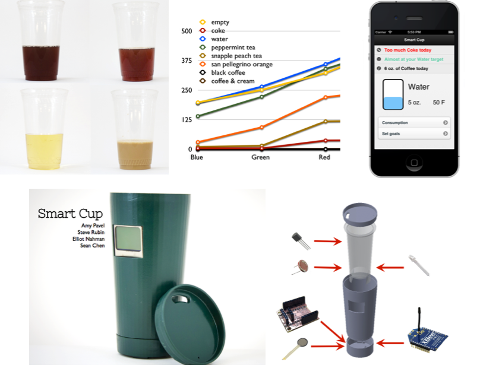
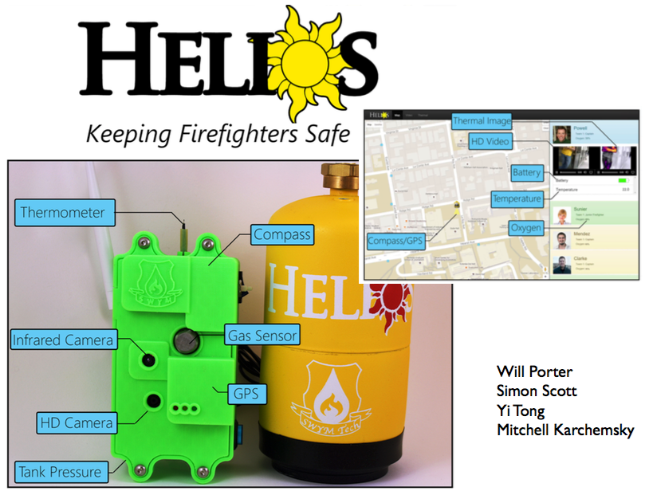
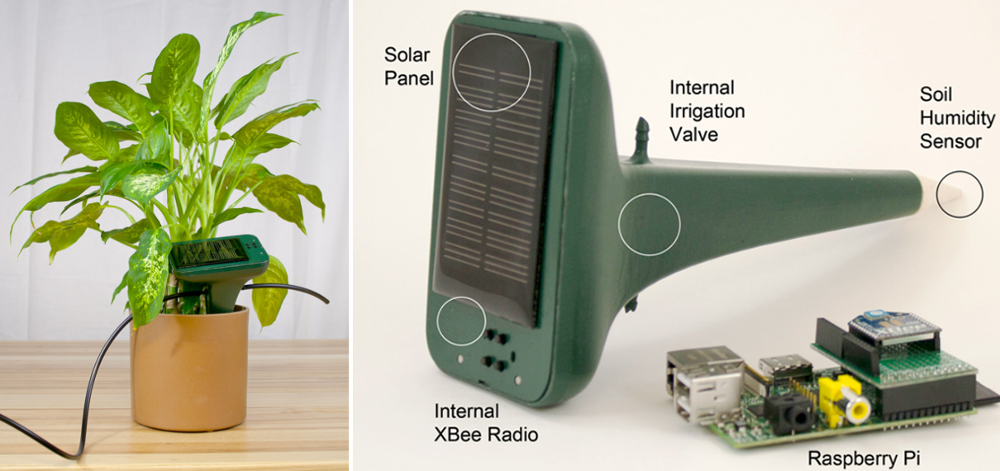
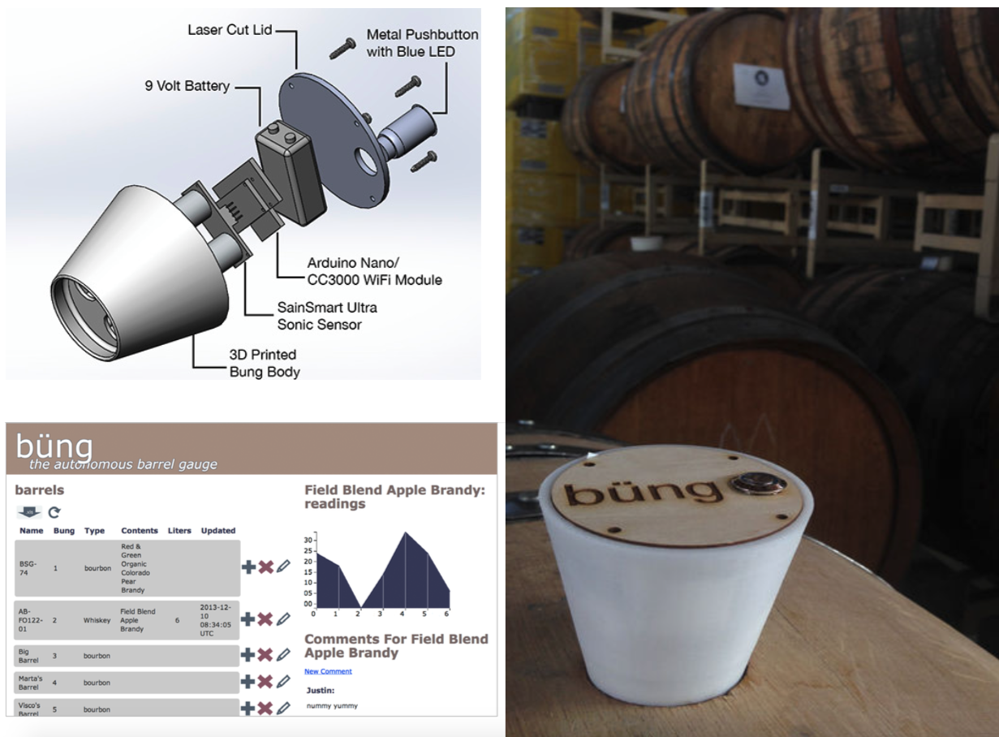

6.S063 Engineering Interactive Technologies (fall 2017)
Open Ended Project (1-2 people)
Deadlines:
September 20, 2017 (friday, 1-3pm in class): tell us about your team mate
September 27, 2017 (wednesday, 11:59pm): upload 5 best ideas to your project website
October 11, 2017 (wednesday, 1-3pm in class): present your ideas in class
November 8, 2017 (wednesday, 1-3pm in class): midterm presentation of first hardware prototype
December 6 and December 13, 2017 (wednesday, 1-3pm in class): final presentation of hardware prototype and live demo
December 13, 2017 (friday, 11:59pm): upload project materials here
Deliverables:
- everything needed to replicate your prototype
- files for 3D printing / laser cutting
- a list of all electronic components you used
- the code that runs your prototype
- a webpage show-casing your prototype (example here) containing:
- a video in which you pitch your prototype
- quality photos of your prototype
- presentation graphics (e.g. a rotoscope)
- log of your weekly progress at the bottom
Questions?
- post on piazza
- go to a TA office hour for building/coding oriented questions (tbd)
- go to an instructor office hour for logistical questions and grading (mondays, 4-5pm, 32-211)
- do not send us emails
Task:
We will run this open ended project kickstarter-style: First, you will build an interactive device using 3D printing, custom electronics, and your coding skills, and then pitch it to potential customers (i.e. for starters your fellow students, but who knows). The deliverables for this project are as described above: (1) everything needed to replicate your prototype, and (2) a website showcasing your prototype. Project Requirements:
While we leave most of the project up to you, we have the following requirements:
- must involve custom laser cut, 3D printed, or milled parts
- must involve custom electronics
- must involve custom code and include some data being sent via wifi
- must be interactive, i.e. react to user input
- must be innovative and solve a real-world need (test pitch to your fellow students, do they buy into it?)
Project Example #1: Smart Cup
Smart Cup uses light sensors to identify what the user is currently drinking. Light sensors work because each drink has a different color (coffee is brown while lemonade is yellow). Smart Cup uses this information to give the user a summary of daily intake on the user's mobile phone and helps with healthier drink choices, e.g. by recommending to drink more water and less coffee. The project includes: 3D printed housing, sensors inside and display facing outside, connection to mobile phone via wifi and custom app.
Project Example #2: Flow Shower Add-on

Flow is an add-on for the shower that measures data, such as the current water temperature and the flow rate of the water. Based on this information, Flow can inform the user about the water usage during a specific day and can also alert the user when a certain temperature is reached and the water might become too hot. The project includes: custom laser cut and 3D printed housing that is watertight, custom sensors, connection to mobile phone via wifi and custom app.
Project Example #3: Firefighter Safety
The Helios device collects data when a firefighter is on site. It transmits this data to a control center to allow the operations manager to make informed decisions of how to help the firefighters e.g. when they run out of tank pressure or when the gas level in the environment is too high. 3D printed enclosure, multiple sensors, and connection to web interface via wifi.
Project Example #4: Plant Watering
The H2O IQ device is a drip irrigation system that reports its moisture to a web interface and queries data about optimal moisture for the plant. It also uses a servo motor to activate a valve to provide more or less water. 3D printed enclosure, custom sensors, connection to web interface via wifi.
Project Example #5: Bar Tender Mixer
Measures if the bartender is shaking the drink correctly and gives visual feedback to the bartender to improve next time. 3D printed enclosure, multiple sensors, and connection to web interface via wifi.
Supplies:
You can reuse the following components from the multi-touch problem set:
- microcontroller
- breadboard
- prototyping cables
- alligator clips
In addition, we will provide you with a selection of sensors.
For everything else you want to use, you might have to get it yourself.
Equipment:
You have access to the following prototyping facilities:
- Cypress Engineering Design Studio
- opening hours (vary every week)
- if you need extra access, email: David L Lewis or Gavin Darcey
- IDC
- use Mobius App to find a makerspace
Grading:
- quality and complexity of your prototype
- quality of presentation and accompanying materials
- consistent weekly progress towards your final prototype